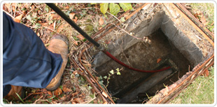

Welcome to London Drains Blocked and Plumbing Services. We are your local 24hr emergency drain clearance and plumbing experts, proudly serving London and the North West London areas inside the M25. Our professional team, led by specialist Chris Drains, is here to assist you in your hour of need, 24 hours a day, 7 days a week, 365 days a year.
In the event that your drains are blocked in the London and North West London areas and there's water all over your property or perhaps even worse, Get in touch with us and we'll take care of all your drainage aspects for you.
If your drains are blocked and backing up or just smell nasty, we’ll identify and remove the cause with no fuss. Your water will be draining away again before you know it.
| Ready to help 24 hours, 365 days a year |
| Fixed price, no hidden costs, no call out fees |
| Here since 1987 - all work guaranteed |
| Local to you, wherever you live |
| Respectful of your time and your home |
Fix it Once - Fix it Right - Fix it Now!
We fit the tools to the task. So, we might use a simple tool or we might need to get out the high-pressure water jet. Rest assured, once we’ve found out what the problem is we’ll usually have the right equipment on hand to take care of it.
Most of the time it’s simply the build-up of what’s gone into the drain, like grease, silt, and leaves, that eventually blocks them. This is all part of the normal wear and tear. Then there are foreign objects, often items flushed down a toilet, which cause a blockage. Finally, it might be a structural defect or breakage caused by tree roots, corrosion, or subsidence. Whatever the problem, we can deal with it.
Professional and trustworthy
All of our work is guaranteed and carried out by our fully trained engineers. So you can feel safe in the knowledge that they won’t just do the job well, they’ll treat you and your home with respect too.
There are no call out charges. We’ll come along and assess your job. There are no hidden charges, prices are fixed and will be what you pay if you ask us to get the job done.
All of our work is guaranteed and carried out by our fully trained engineers.
If you have a blocked drains in London, Chris Drains can help you with the right diagnostic equipment and the full range of drain clearing solutions. We also cover North West London Areas.